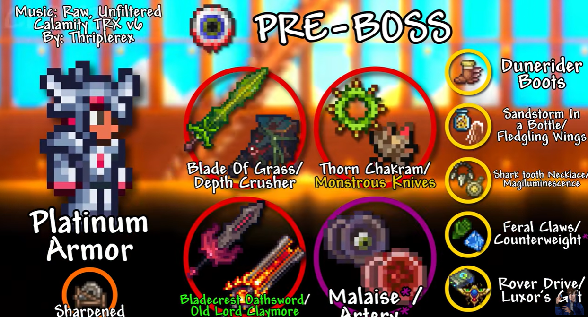

idk what to write the css is too hard :( i wanted a ui where i could put a image of a item into a circle or
smth, and have like 4 circles with different items. Some wouldve had 2
items and it woudlve been a "either this or that" thing. All items in the circles would work and i would
highlight my preferred options green. There also wouldve been a UI at the bottom to switch between the classes
of the game and buttons to switch to further progression and past (like a left button saying "go to pre-boss"
and a next button saying "go to pre-skeletron" or smth, and then images of the classes on the bottom to click so
it changes to that reccomended stuff) i do have a example image of something similar:

Credits to Clotz on YouTube for their great guides